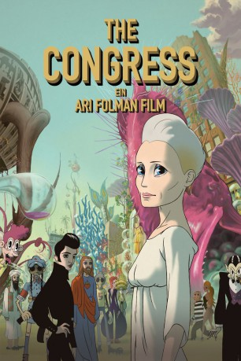
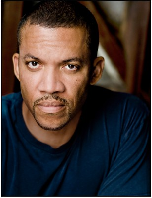

#7130 The Congress
 
 IMDB-Wertung: 6.5 / 10
IMDB-Wertung: 6.5 / 10  Metascore: 0
Metascore: 0 
Für Robin Wright ist ihre große Zeit als Schauspielerin in Hollywood endgültig vorbei. Sie bekommt keine Rollen mehr, da sie bereits in den Vierzigern ist, und steht kurz vor dem finanziellen Ruin. Doch da machen ihr die Filmstudios Miramount ein überraschendes Angebot: Sie wollen die Figur, viel mehr noch das Filmstar-Image von Robin Wright, kaufen und einscannen, um einen digitalen Star zu erschaffen. 20 Jahre lang, so lange gilt der Vertrag, gehört die Figur „Robin Wright“ dann den Miramount-Studios, die sie unbegrenzt für animierte 3D-Filme einsetzen dürfen. Im Gegenzug wird Robin in all diesen Filmen immer jung bleiben, allerdings darf sie auch nie wieder eine Bühne oder ein Film-Set betreten, solange der Vertrag gültig ist. In Ermangelung anderer Möglichkeiten willigt sie ein, um mit dem Geld ihrem kranken Sohn helfen zu können. 20 Jahre später ist die reale Robin Wright vollkommen unbekannt, doch ihr eingescanntes Abbild ist einer der weltweit berühmtesten Animationshelden…
Jahr: 2013
Dauer: 117 Minuten
FSK: 12
Land: Israel Studio: Pandora Film VerleihTonspuren: DD5.1 - ,
Untertitel:
Auflösung: 1080p (1920x1040) Größe: 7495 MB
Genre: Drama, Sci-Fi, Animation/Trick
Regisseur: Ari Folman
Drehbuch: Stanislaw Lem
Soundtrack:
Darsteller:
 Robin Wright als Robin Wright
Robin Wright als Robin Wright Harvey Keitel als Al
Harvey Keitel als Al Sami Gayle als Sarah
Sami Gayle als Sarah Jon Hamm als Dylan Truliner
Jon Hamm als Dylan Truliner Kodi Smit-McPhee als Aaron Wright
Kodi Smit-McPhee als Aaron Wright Danny Huston als Jeff Green
Danny Huston als Jeff Green Michael Stahl-David als Steve
Michael Stahl-David als Steve Paul Giamatti als Dr. Barker
Paul Giamatti als Dr. Barker- Ed Corbin als Charlie , uncredited
-  Christopher B. Duncan als Christopher Ryne , uncredited
- Evan Ferrante als Tom Cruise , uncredited
 John Lacy als Gate Guard , uncredited
John Lacy als Gate Guard , uncredited Michael Landes als Maxi , uncredited
Michael Landes als Maxi , uncredited- Jill Maddrell als Resident , uncredited
- Jörg Vincent Malotki als Man in Zeppelin , uncredited
 Don McManus als Reeve Bobs , uncredited
Don McManus als Reeve Bobs , uncredited Sarah Shahi als Michelle , uncredited
Sarah Shahi als Michelle , uncredited Kevin Thompson als Ralph , uncredited
Kevin Thompson als Ralph , uncredited Cooper Thornton als Head Physician v27 , uncredited
Cooper Thornton als Head Physician v27 , uncredited- August Wittgenstein als Travis , uncredited
 Matthew Wolf als Adult Aaron Wright , uncredited
Matthew Wolf als Adult Aaron Wright , uncredited- Michal Kahan als Drummer , uncredited
- Charlie Megira als Lead Singer & Guitar , uncredited
- Shawn Weber als Security Guard , uncredited
Datei: X:\HD-Trick\Congress, The (2013, FSK12, 1920x1040).mkv seit 28.09.2017
Festplatte: Kinder-Filme+Trick
 Es gibt insgesamt 28 Filme in der Gruppe 'HD-Trick'
Es gibt insgesamt 28 Filme in der Gruppe 'HD-Trick'